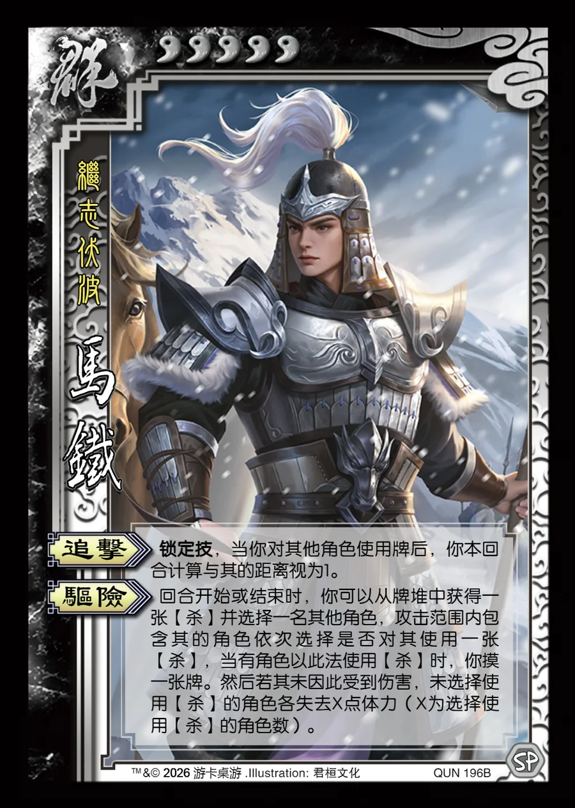

点击卡面查看大图
群
马铁
♥5继志伏波
追击锁定技
锁定技，当你对其他角色使用牌后，你本回合计算与其的距离视为1。
驱险
回合开始或结束时，你可以从牌堆中获得一张【杀】并选择一名其他角色，攻击范围内包含其的角色依次选择是否对其使用一张【杀】，当有角色以此法使用【杀】时，你摸一张牌。然后若其未因此受到伤害，未选择使用【杀】的角色各失去X点体力（X为选择使用【杀】的角色数）。

点击卡面查看大图
继志伏波
锁定技，当你对其他角色使用牌后，你本回合计算与其的距离视为1。
回合开始或结束时，你可以从牌堆中获得一张【杀】并选择一名其他角色，攻击范围内包含其的角色依次选择是否对其使用一张【杀】，当有角色以此法使用【杀】时，你摸一张牌。然后若其未因此受到伤害，未选择使用【杀】的角色各失去X点体力（X为选择使用【杀】的角色数）。